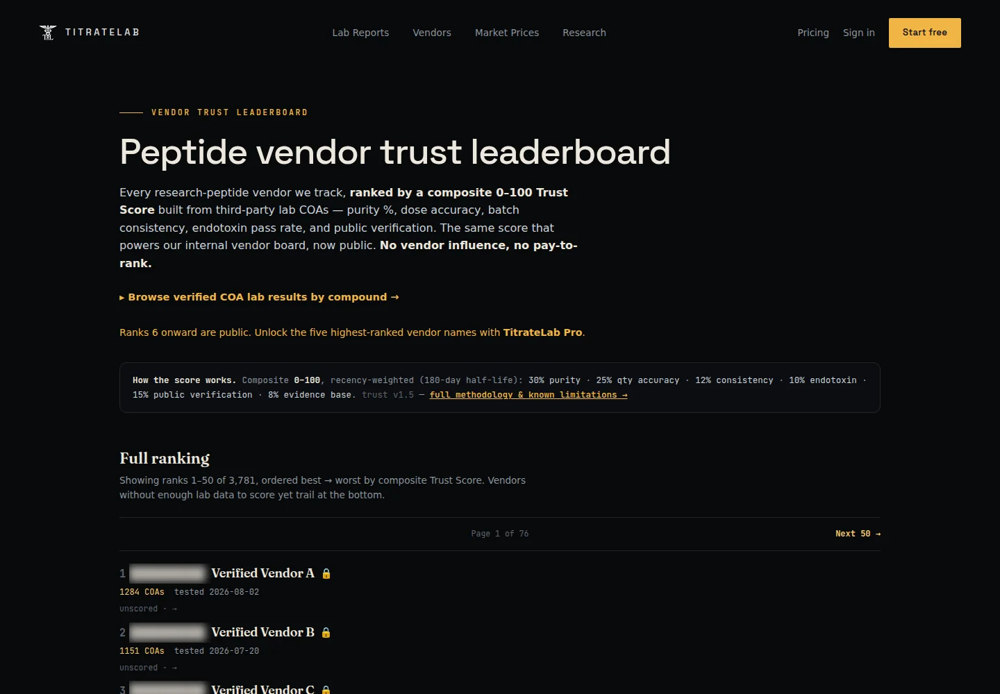
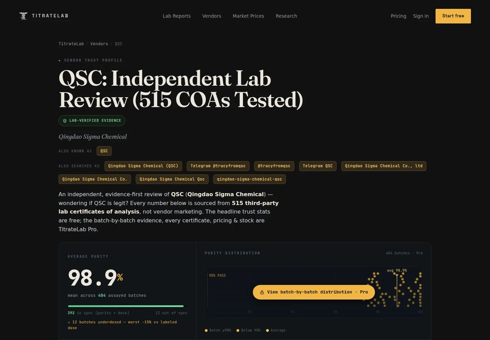
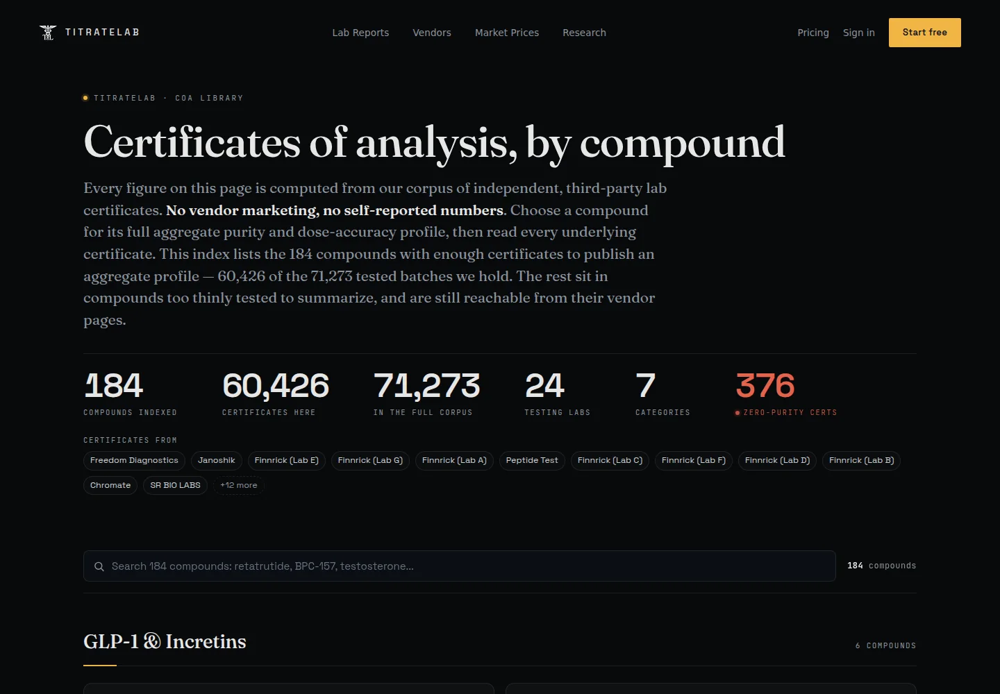

Peptide.chat presents
TitrateLab
The peptide vendor record

Peptide.chat presents
The peptide vendor record
Peptide.chat presentsThe #1 peptide vendor review + lab evidence platform1
The peptide vendor record.
Reviews, evidence-based vendor rankings, third-party lab COAs and market prices, connected in one searchable intelligence platform.
71,273Lab test records in the full corpus
3,781Research peptide vendor records tracked
184Compounds indexed in the COA library
Product snapshot observed August 7, 2026. Counts change as TitrateLab adds records. A COA reports a test result; it is not a guarantee.
Compare research peptide vendors
Finding the best peptide vendor is not a popularity contest. TitrateLab organizes three different signal types so researchers can inspect what was reported, what was measured and how the available evidence was scored.
Customer reports can describe communication, tracking, shipping and delivery. TitrateLab preserves attribution and labels relayed reports as testimony, not independently verified laboratory evidence.
Explore vendor profilesCertificates are normalized into records for reported purity, delivered quantity, endotoxin, testing laboratory, test date and public verification source when available.
Search the COA databaseA transparent, recency-weighted Trust Score summarizes defined lab-evidence inputs, batch consistency, public verification and evidence depth without vendor pay-to-rank.
Audit the ranking methodPeptide vendor trust leaderboard
TitrateLab's composite 0-100 Trust Score uses an 180-day recency weighting and publishes the evidence model behind the leaderboard. Scores summarize available records; they do not certify a vendor or predict a future batch.

30%Reported purity
25%Quantity accuracy
12%Batch consistency
10%Endotoxin evidence
15%Public verification
8%Evidence depth
Weights reflect the published TitrateLab methodology observed August 7, 2026. Review the live methodology and known limitations before interpreting a score.
From vendor review to source record
A vendor dossier connects aliases, third-party certificates and reported batch history. The COA library lets researchers move the other direction: from a compound-wide aggregate back toward individual certificates and source details.


TitrateLab B2B API preview
TitrateLab is organizing its vendor identity graph, normalized laboratory records and market observations into a forthcoming B2B data layer. The goal is traceable intelligence with provenance and limitations attached, not an anonymous bulk feed.
Explore TitrateLabAPI access is forward-looking and not represented as currently available. Campaign footage contains promotional statements; verify live corpus totals and product availability on TitrateLab.
Canonical vendor records connected to aliases, source channels and public evidence.
Reported purity, quantity, laboratory, test date and available verification source.
Methodology version, component weights, recency treatment and known limitations.
Timestamped package, price and availability context without pretending observations are guarantees.
How to compare peptide vendors
A useful peptide vendor comparison looks beyond a single review, a posted purity percentage or the lowest listed price. Check whether the certificate is third-party, whether the vendor and batch are attributable, how recent the test is, how delivered quantity compares with the label and whether results remain consistent across batches.
TitrateLab keeps those questions searchable across vendor profiles, peptide lab results and market-price observations. It gives the phrase "best peptide vendor" an inspectable evidence trail rather than a permanent answer.
Bring a vendor name
Search thousands of research peptide vendor records, then follow the evidence from community report to third-party laboratory certificate.
Research a peptide vendor Start free. No card required.Peptide vendor research FAQ
TitrateLab is an intelligence platform, not a testing laboratory, vendor certification or medical service.
A peptide vendor review platform organizes vendor records, customer reports, pricing and laboratory evidence so researchers can compare sources using more than promotional claims. TitrateLab separates community testimony from third-party peptide lab evidence.
TitrateLab publishes a composite Trust Score using recency-weighted laboratory evidence, including reported purity, quantity accuracy, consistency, endotoxin reporting, public verification and evidence depth. Its methodology and limitations are public.
No. TitrateLab is an independent intelligence platform, not a testing laboratory. It aggregates and normalizes publicly available third-party certificates of analysis and links evidence to its source when available.
Yes. TitrateLab combines vendor profiles, market price observations and peptide COA records so researchers can compare price, reported purity, delivered quantity, batch history and evidence freshness in context.
Relayed customer reports are labeled as testimony and not independently verified. TitrateLab does not treat a review as laboratory evidence, a guarantee of future service or proof of product quality.
No. Scores summarize available evidence under a defined method. They do not guarantee identity, purity, safety, legality, delivery or future vendor performance, and they are not vendor endorsements.